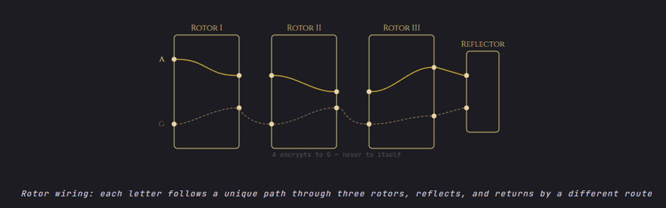

Die Enigma Maschine wurde im 2. Weltkrieg von dem deutschen Militär genutzt, um Ihre strategischen Funksprüche zu verschlüsseln. Diese wurde durch die häufige Wiederholung des Grusses «Heil Hitler» zu Begin der Botschaft geknackt.
Das Grundprinzip der Maschine ist einfach. Ein Text wird über eine Tastatur eingegeben, diese Eingabe wird durch mehrere, sich mit jedem Zeichen drehende Zahnräder in eine Ausgabe umgewandelt. Durch die sich drehenden Räder, wurde die Verschlüsselung stets von den vorausgehenden Zeichen beeinflusst und erschwerte so das Herbeiführen eines Schlüssels stark, da die ja weder die vorausgehende Eingabe noch der Schlüssel bekannt waren. Als besonders sicher galt diese, da sie über 158,962,555,217,826,360,000 mögliche Schlüssel verfügte, was Brute-Force, das einfache Ausprobieren aller Schlüssel, praktisch unmöglich machte.
Die fatale Schwachstelle der Enigma Maschine war schlussendlich ein Mix aus mehreren menschlichen und designtechnischen Faktoren. Einerseits konnte die verschlüsselte version eines Buchstabens nie der Buchstabe selbst sein, was den Kryptoanalysten Grossbritanniens einen Eingangspunkt gab, andererseits wurden oft faule Einstellungen genutzt (Name der eigenen Freundin als Schlüssel, die drei Buchstabenräder auf AAA/BBB/CCC) und stets waren erratbare Passagen vorhanden (Wetterberichte begannen mit WETTER, viele Nachrichten endeten mit HEIL HITLER).
Dennoch brauchte die Entschlüsselung einige Zeit, mehrere Maschinen wurden hierzu gebaut, die pro Sekunde tausende Kombinationen elektronisch prüften.

Vereinfachte Darstellung der internen Funktionsweise der Enigma-Maschine
<- Zimmermann-Telegramm Vergleich ->